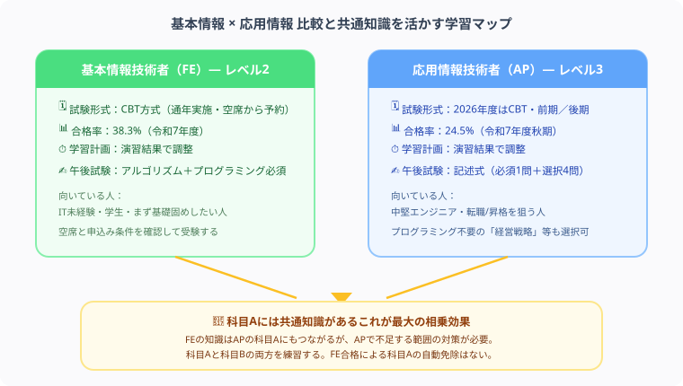

基本情報技術者 vs 応用情報技術者 どっちを先に取るべき？難易度・就職・転職を徹底比較【2026年版】
私は会計の学習を経験し、現在はITパスポート・基本情報を学習していますが、実は会計の世界でもITの基礎知識は年々必須になっています。プログラミング専攻じゃない文系・会計系の受験生から「結局どっちを取ればいいの？」と聞かれることが本当に多いので、今日は最短ルートをはっきり示します。
「基本情報（FE）を取ってから応用情報（AP）を目指すべきか、最初から応用情報を狙うべきか」——この永遠の悩みに、難易度・勉強時間・就職転職への効果まで含めて、私の視点から白黒つけます。
この記事で整理した内容から、次の学習で確認することを1つ選び、記録に残してみてください。
基本情報技術者（レベル2）と応用情報技術者（レベル3）は試験形式と難易度が大きく異なります。FE取得後のキャリアステップとしてAPを目指す方向けに、順番に整理していきます。

基本情報の比較
| 項目 | 基本情報技術者（FE） | 応用情報技術者（AP） |
|---|---|---|
| IPA難易度レベル | レベル2 | レベル3 |
| 試験形式 | CBT方式（通年受験） | 2026年度からCBT方式に移行（前期・後期の期間内で複数日程から選択） |
| 合格率 | 38.3%（令和7年度） | 24.5%（令和7年度秋期） |
| 必要勉強時間 | 150〜200時間 | 300〜500時間 |
| 受験料 | 7,500円 | 7,500円 |
| 対象者 | ITエンジニア入門・学生 | 中堅エンジニア・SE |
| 科目B | 多肢選択式20問・100分 | 記述式11問中5問解答・150分（問1必須、問2〜11から4問） |
出典：IPA「試験要綱Ver.5.6」、IP・SG・FEパンフレット、AP令和7年度秋期合格発表、FE令和7年度統計、2026年度AP実施期間（2026年10月31日確認）。
FEは受験者147,186人中56,370人、APは令和7年度秋期の44,005人中10,792人が合格。分母と対象期間が異なるため、率だけで個人の難易度を決めません。料金7,500円は税込みで、支払方法により別途手数料がかかる場合があります。
難易度の違い
基本情報技術者試験（FE）はIPA（情報処理推進機構）のスキルレベル2、応用情報技術者試験（AP）はレベル3に位置します。合格率はFEが令和7年度38.3%に対しAPは24.5%（令和7年度秋期）と大きな差があります。
基本情報（FE）の特徴
- 科目A：四肢択一60問・90分
- 科目B：アルゴリズムとプログラミング16問・情報セキュリティ4問（多肢選択式）
- CBT方式で通年受験可能（2023年度〜）
- IT未経験でも150時間程度の勉強で合格可能
応用情報（AP）の特徴
- 科目A：四肢択一80問・150分
- 科目B：記述式。問1必須＋問2〜11から4問を選び、計5問解答
- 「経営戦略」「プロジェクト管理」など文系科目も選択可
- 2026年度はCBTで前期・後期に実施。科目Aと科目Bは別日で、それぞれの期間内の空席から選択する（特別措置試験は筆記方式）
勉強時間の計画例
本記事の時間表と星評価は編集部の仮置き例で、属性別の合格者調査ではありません。一定時間で合格できる、資格で採用・昇格が保証されるという意味ではありません。公開問題の理解度と、応募先の条件から調整してください。
| 属性 | 基本情報（FE）の目安 | 応用情報（AP）の目安 |
|---|---|---|
| IT未経験者 | 200〜250時間 | 500〜600時間 |
| 文系IT職（1〜2年） | 100〜150時間 | 300〜400時間 |
| ITエンジニア（3年以上） | 50〜100時間 | 150〜250時間 |
| 情報系学生 | 60〜100時間 | 200〜300時間 |
就職・転職への効果
基本情報技術者（FE）の評価
- 新卒・第二新卒のIT就職で「ITの基礎知識がある」証明として有効
- IT基礎の学習内容を応募先の業務と結び付けて説明する材料になる
- 一部企業では入社後の昇格要件に設定
- 転職市場では「持っていて当然」と見られることも
応用情報技術者（AP）の評価
- 上位の役割に必要な知識と自分の実務経験を整理する材料になる
- 転職市場での差別化に効果大
- 一部国家資格（中小企業診断士・弁理士など）の試験免除特典あり
- 公務員の採用条件や加点の有無は試験区分ごとの案内で確認する
どちらを先に取るべき？タイプ別おすすめ
| あなたのタイプ | おすすめ | 理由 |
|---|---|---|
| IT未経験・文系学生 | 基本情報→応用情報 | 土台作りが最優先 |
| 情報系学生・在学中 | 基本情報→応用情報 | 在学中に両方取ると就活で強い |
| IT職経験2年以上 | 応用情報から | 基本情報は知識的に余裕あり |
| 文系でプログラミングが苦手 | 応用情報から | 午後試験で文系科目を選択できる |
| 転職・昇格が目標 | 応用情報から | 評価はAPの方が格段に高い |
ダブル取得の戦略
両資格を取得すると、IPAのスキルレベル2→3と段階的にITスキルを証明できます。特に学生であれば在学中に両方を取得することで就活で大きなアドバンテージになります。
取得する時期は一律ではありません。応募締切、会社の制度、毎週の学習枠を確認して、受験する順序を決めてください。
比較で悩む人がよく引っかかる3つの落とし穴
- 「基本情報を持っているから応用情報も余裕」と午前対策を軽視してしまう：午前試験の範囲は重なりますが、応用情報は問題の深さが違います。基本情報の知識をベースに、より突っ込んだ理解が必要になることを見落とさないでください。
- 文系だからと最初から応用情報の午後試験を避けてしまう：応用情報の科目Bは情報セキュリティが必須で、残り10問から4問を選びます。経営戦略・サービスマネジメントなども候補ですが、技術知識をすべて避けられるわけではありません。プログラミングが苦手というだけで諦めるのはもったいないです。
- ダブル取得の順番を決めずに、なんとなく勉強を始めてしまう：学生か社会人か、目的が就職か転職かによって最適な取得順・タイミングは変わります。上の「タイプ別おすすめ」表で自分の立ち位置を先に確認してから学習計画を立てましょう。
文系・理系関係なく、ITの基礎知識は今やどんな仕事にも武器になります。会計を勉強している私自身も、ITの知識に助けられる場面が増えました。FEにするかAPにするか迷っている時点で、あなたはもう一歩前に進んでいます。自分に合ったルートで、着実に合格を掴みましょう。応援しています！
この記事で整理した内容から、次の学習で確認することを1つ選び、記録に残してみてください。